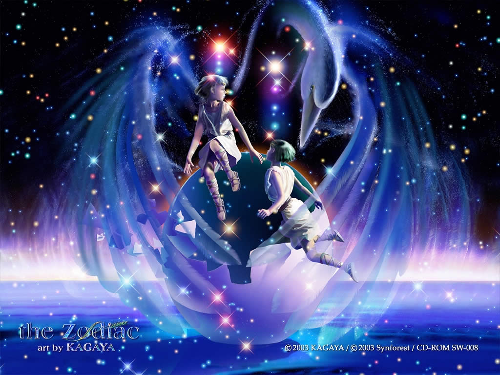

如影随形
主页
设计
作业
音乐
旅行
珍惜手边的幸福
影子是一个会撒谎的精灵，
它在虚空中流浪和等待被发现之间;
在存在与不存在之间....
3000+
你怎会知道我以怎样的心情
不想去计较不是懦弱而是因为根本不想放在眼里。
回忆中的我们提醒着我，你已离我很远很远。
生活累，一小半源于生存，一大半源于攀比。
3000+
你怎会知道我以怎样的心情
不想去计较不是懦弱而是因为根本不想放在眼里。
回忆中的我们提醒着我，你已离我很远很远。
生活累，一小半源于生存，一大半源于攀比。
-
 张君桃
张君桃
28、知之者不如好之者，好之者不如乐之者。――孔子 29、勇猛、大胆和坚定的决心能够抵得上武器的精良。――达・芬奇 30、意志是一个强壮的盲人，倚靠在明眼的跛子肩上。――叔本华 31、只有永远躺在泥坑里的人，才不会再掉进坑里。――黑格尔 32、希望的灯一旦熄灭，生活刹那间变成了一片黑暗。――普列姆昌德 33、希望是人生的乳母。――科策布 34、形成天才的决定因素应该是勤奋。――郭沫若 19、哭出了声，才知道自己是多么的弱小。 20、万物皆有裂痕，那是光照进的地方。 21、我只有一遍一遍看你们的甜言蜜语，才能让自己的心痛到麻木。 22、总有一天，你的棱角会被世界磨平，你会拔掉身上的刺，你会学着对讨厌的人微笑。 23、花开花落，我一样会珍惜。 24、疏影横斜水清浅， 暗香浮动月黄昏。 25、其实我挺羡慕恩尚，阿叹是她白马王子，崔英道是她黑骑士，灿荣是她蓝颜！ 26、曾经，以为爱一个人就是一生一世，牵他的的手，一起老去。后来，终于在眼泪中懂得，爱若烟花，刹那芳菲，太真太美又太短暂，来不及眨眼，泪就落下了。 27、你仍是我的软肋，却不在是我的盔甲。 -
 高婧
高婧
28、知之者不如好之者，好之者不如乐之者。――孔子 29、勇猛、大胆和坚定的决心能够抵得上武器的精良。――达・芬奇 30、意志是一个强壮的盲人，倚靠在明眼的跛子肩上。――叔本华 31、只有永远躺在泥坑里的人，才不会再掉进坑里。――黑格尔 32、希望的灯一旦熄灭，生活刹那间变成了一片黑暗。――普列姆昌德 33、希望是人生的乳母。――科策布 34、形成天才的决定因素应该是勤奋。――郭沫若 19、哭出了声，才知道自己是多么的弱小。 20、万物皆有裂痕，那是光照进的地方。 21、我只有一遍一遍看你们的甜言蜜语，才能让自己的心痛到麻木。 22、总有一天，你的棱角会被世界磨平，你会拔掉身上的刺，你会学着对讨厌的人微笑。 23、花开花落，我一样会珍惜。 24、疏影横斜水清浅， 暗香浮动月黄昏。 25、其实我挺羡慕恩尚，阿叹是她白马王子，崔英道是她黑骑士，灿荣是她蓝颜！ 26、曾经，以为爱一个人就是一生一世，牵他的的手，一起老去。后来，终于在眼泪中懂得，爱若烟花，刹那芳菲，太真太美又太短暂，来不及眨眼，泪就落下了。 27、你仍是我的软肋，却不在是我的盔甲。 -

-

28、知之者不如好之者，好之者不如乐之者。――孔子 29、勇猛、大胆和坚定的决心能够抵得上武器的精良。――达・芬奇 30、意志是一个强壮的盲人，倚靠在明眼的跛子肩上。――叔本华 31、只有永远躺在泥坑里的人，才不会再掉进坑里。――黑格尔 32、希望的灯一旦熄灭，生活刹那间变成了一片黑暗。――普列姆昌德 33、希望是人生的乳母。――科策布 34、形成天才的决定因素应该是勤奋。――郭沫若 19、哭出了声，才知道自己是多么的弱小。 20、万物皆有裂痕，那是光照进的地方。 21、我只有一遍一遍看你们的甜言蜜语，才能让自己的心痛到麻木。 22、总有一天，你的棱角会被世界磨平，你会拔掉身上的刺，你会学着对讨厌的人微笑。 23、花开花落，我一样会珍惜。 24、疏影横斜水清浅， 暗香浮动月黄昏。 25、其实我挺羡慕恩尚，阿叹是她白马王子，崔英道是她黑骑士，灿荣是她蓝颜！ 26、曾经，以为爱一个人就是一生一世，牵他的的手，一起老去。后来，终于在眼泪中懂得，爱若烟花，刹那芳菲，太真太美又太短暂，来不及眨眼，泪就落下了。 27、你仍是我的软肋，却不在是我的盔甲。 -
 曹越
曹越
35、学到很多东西的诀窍，就是一下子不要学很多。――洛克 36、自己的鞋子，自己知道紧在哪里。――西班牙 37、我们唯一不会改正的缺点是软弱。――拉罗什福科 38、我这个人走得很慢，但是我从不后退。――亚伯拉罕・林肯 39、勿问成功的秘诀为何，且尽全力做你应该做的事吧。――美华纳 40、学而不思则罔，思而不学则殆。――孔子 41、学问是异常珍贵的东西，从任何源泉吸收都不可耻。――阿卜・日・法拉兹 42、只有在人群中间，才能认识自己。――德国 43、重复别人所说的话，只需要教育；而要挑战别人所说的话，则需要头脑。――玛丽・佩蒂博恩・普尔 44、卓越的人一大优点是：在不利与艰难的遭遇里百折不饶。――贝多芬 -
王腾飞
35、学到很多东西的诀窍，就是一下子不要学很多。――洛克 36、自己的鞋子，自己知道紧在哪里。――西班牙 37、我们唯一不会改正的缺点是软弱。――拉罗什福科 38、我这个人走得很慢，但是我从不后退。――亚伯拉罕・林肯 39、勿问成功的秘诀为何，且尽全力做你应该做的事吧。――美华纳 40、学而不思则罔，思而不学则殆。――孔子 41、学问是异常珍贵的东西，从任何源泉吸收都不可耻。――阿卜・日・法拉兹 42、只有在人群中间，才能认识自己。――德国 43、重复别人所说的话，只需要教育；而要挑战别人所说的话，则需要头脑。――玛丽・佩蒂博恩・普尔 44、卓越的人一大优点是：在不利与艰难的遭遇里百折不饶。――贝多芬